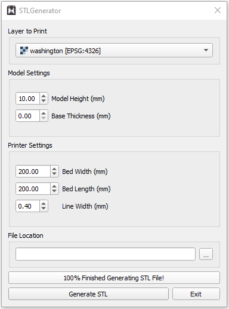

These instructions will explain the necessary steps for creating a stereolithography (STL) file representing the
terrain of your country of choice. This manual will cover how to download Digital Elevation Models (DEMs)
representing the country's terrain, merge those downloaded DEM files, and then turn that cropped DEM into an STL
file. It is recommended that you have some knowledge about the printing capabilities of your 3D printer.
Some of the later steps will require you to put in parameters that are the dependent on your printer settings
such as your line width or layer height.
Installing The Files and Software
Downloading The Necessary DEM Files
The first step towards generating a 3D model of your terrain is downloading the elevation models. While there are
many places you could download elevation models from, for the sake of this guide, we'll be using OpenTopography.
If you already have your DEM files, you can skip down to "Preaparing The DEM Files". Now, these are the steps
you will need to take for downloading these Digital Elevation Models (DEMs):
Click on “List all Datasets” and then scroll down and select “Global & Regional DEM”
You should see a list of dataset names pop up right underneath the button you just clicked. On the 9th
row, find the button that says “SRTM GL3” and click on it. This will take you to a new webpage for
downloading DEMs from the SRTM GL3 dataset.
Figure 1: OpenTopography webpage showing the “List All Datasets” hyperlink (top left),
“Global
&Regional DEM” tab, and the button for the “SRTM GL3” dataset
Once on the new page, scroll down until you see the map widget and click on the “Select A Region” button
in the top-left corner of the map.
Highlight your region of interest on the map by pressing down left-click at the top left corner of the
region and releasing left-click at the bottom-right corner of the region
A region that has been successfully selected will be highlighted by a light blue rectangle as
shown in figure 2.
Figure 2: Image of map widget(top) with a region selected in blue
Scroll down to the section labeled “Job Description” and enter your e-mail address in the corresponding
section below.
Figure 3: Job description section with an example email entered in the bottom text box
Click submit to finalize the download request. This will take you to a new page where you will have to
wait for your download to be processed. This may take a few minutes.
Once the job status changes to done, you will find a download link appear under the “Download Data”
section. Click on this link and you will be able to download the DEMs needed for this
Extract the downloaded zip file and move the extracted “.tif” file into its own folder
a. If you must download files in multiple stages, save all the DEMs into this same folder as it will
make the future steps easier
Preparing the DEM Files
Opening the DEMs in QGIS
At the top navbar, go to Layer > Add Layer > Add Raster Layer. This will open a new popup window.
Underneath the “Source” section, click the horizontal ellipses button to open the file explorer as seen
in figure 4.
Figure 4: Popup window where you select the DEMs to be opened. The horizontal ellipses can be
seen to the top right.
Navigate to the folder you downloaded your DEMs, select all the DEM files you downloaded previously, and
then press enter.
Click Add at the bottom of the popup window
Close the popup window.
(Optional) Combining the DEMs
*** This section is only necessary if you downloaded multiple DEM files and you want to use them together to
generate a
model
At the top navbar, go to Raster > Miscellaneous > Merge… which will open a new popup window.
Click on the horizontal ellipses button which opens up a window showing all your DEM files.
Click on the “Select All” button and double check that all of the listed DEMs have a checkmark beside
them.
Finally, click on “Run” at the bottom of the window and wait for the merge to finish processing.
Once it's done running, you can close the popup window.
Using the STL Generator Plugin
Installing the Plugin
At the top navbar, go to Plugins > Manage and Install Plugins…
In the newly opened window, type “STL Generator” in the top search bar.
Click on the name “STL Generator” in the list to the left side of the window.
Click on the “Install Plugin” button at the bottom of the window.
Once the plugin is finished installing, you can close the popup window
Creating an STL using the Plugin
Now all that's left is to turn the DEM that you finished processing in the previous steps into a 3D STL file.

Figure 5: Dialog window for STL Generator plugin
At the top navbar, go to "Raster" > "STLGenerator" > "Generate an STL File", which will open a new popup
window.
In the dropdown box under “Layer to Print”, select the layer that you want to make an STL out of.
If you followed the steps for preparing the DEM files above, select the one layer you have if you
only had one DEM file or select the layer named “Merged” if you had to merge multiple files.
Next, go to the "Model Settings" section below and enter the Model Height and Base Thickness in millimeters
Model Height refers to the distance between the highest and lowest point of the DEM. Increasing
this value will lead to more exaggerated highs and lows on the model
Base Thickness refers to the the distance between the lowest point of the DEM and the bottom of the
model. Increasing this value will increase the thickness of the model without affecting the terrain
on top of the model.
Under the "Printer Settings" section, fill out all the parameters with the corresponding settings from you
3D printer and slicer
For the "File Location", enter the directory/folder you want to save the file to, using either the text box
or by clicking on the three dots and using the file explorer
Finally, click on "Export to STL" and select where you want to save your STL file.
You're Done!
Congrats, you now have a completed STL file representing the terrain of your choice. Now, you can use
this STL to get started on 3D printing a physical model of the region. You can use this 3D print for an
educational model, decorative piece, or anything else you want. You can even share this file with others you
know or on the internet, so they can 3D print their own model too. While this guide focused on the final goal
of 3D printing your model, you can still use this STL for purposes other than 3D printing such as in
computer-aided manufacturing or digital animations. Regardless of what you do, hopefully your newly generated
model can help you continue to appreciate some of the incredible geography that our planet has to offer.